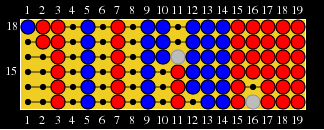
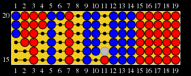
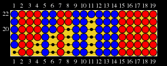
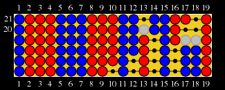
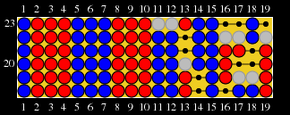
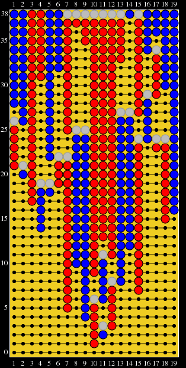
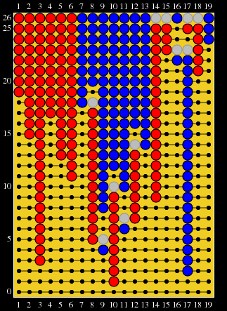

Rozenkrantz/Xifeng wrote a really nice, long strategy article about Alak over at Board Game Strategies. Check it out:
Rozenkrantz/Xifeng wrote a really nice, long strategy article about Alak over at Board Game Strategies. Check it out:
http://www.boardgamestrategies.com/blog/alak-strategy-tactics-in-depth/
Alak is a light abstract strategy game played on a 1-dimensional board. It shares some similarities with Go, but there is no passing, and capture is active rather than conditional: you must sandwich your opponent's pieces between two of your own (or one of your own and the edge of the board) in order to capture them; pieces are not captured just because they have no liberties. Moves that would be suicide in Go actually make a safe group in Alak, that cannot be captured.
Alak uses the Tibetan Ko rule: on the turn immediately after a capture, you may not play onto any of the spaces from which your stones have been removed. The game ends when there are no legal moves left, whether that is because the board is full or because the empty spaces on the board are in ko. The winner is the player with more pieces on the board, once there are no moves left.
Games can be “open” or “closed,” depending on how much capturing there is. An open game involves a lot of capturing, so the space on the board is recycled and games can run quite long, even upwards of 100 half-moves. Closed games are over much faster, and usually involve very little capturing; ladders get played out without a lot of back-and-forth. One exception is the Blob strategy, which creates a closed game where only one player makes captures.
Ladders
Since the board is very small, ladders can take up most or even all of the board. The basic form of a ladder is alternating groups of each color, separated by a single space each time:
Super Duper Games displays the history of a game from bottom to top; the top line is the current position, the line below that is the previous half-move, and each lower line is one half-move earlier in the game.

Blue starts a ladder at 1. If red moves anywhere but 4, Blue can capture the two red pieces. Since red is currently leading 8-7, red does not want to open up the game, so it is to red's advantage to play out the ladder.

Red 4 threatens to capture blue 5 via 6, so Blue plays 6, threatening red 7

After red 8, blue only has one move available, and then the board is full. Red wins 10-9. Blue should not have played into the ladder.
Opening the Game
If continuing a ladder will end the game with you losing, then there is no point in trying to save the stones in the ladder: either you have enough to win, or they are worthless to you. If there are no captures during a game, Red will win by virtue of having moved first. For that reason, Blue wants captures to happen at some point in the game, even if Blue's own stones are the ones being captured. Better an open game at a large disadvantage than a closed game at a small disadvantage.
The easiest way to open a game is by starting a ladder early on, and sacrificing some of your pieces in that ladder. Once you do that, a reverse-ladder will form: players alternately capture the groups that make up the ladder:

If Blue fills in at 13, the game ends 10-9 and Blue loses. Instead, Blue must sacrifice the stones at 11 and 12, which opens up red's 8-9-10 to capture:

Capturing 8-9-10 leaves 5-6-7 open to capture, but capturing 5-6-7 leaves 2-3-4 open to capture.
Gambits
Since Blue starts the game at a disadvantage, gambits are useful for changing the flow of the game. By making some early sacrifices, Blue can ensure a very volatile game with lots of capturing. Here is a full game where I employed a rushdown strategy as Blue, starting with a sacrifice and then constantly putting pressure on Red. The game begins at the bottom, and each move is added on its own line.

Blue's primary goal is to prevent a closed game until they can get ahead in captures. Also worth mention is the importance of Alak's unusual Ko rule in this game: the last move (38) would not have ended the game if Alak used one of the ordinary Ko rules that most Go variants use. The rule that Alak uses prevents all snapbacks, not just those that result in a repeat position.
The Blob
This gambit involves Blue sacrificing their first and second stones. It is one of the rare closed games that is advantageous to Blue. In the above game, on move 5 red refused to accept the proffered second sacrifice in order to avoid falling victim to this strategy:

This strategy again makes use of the Tibetan Ko rule. Capturing one stone at a time leaves a hole in Blue's formation, but Red can't play into that hole right away, because it is in ko. Blue can therefore fill that hole on their own turn, which creates a strong formation that red cannot attack. The red stones on the edges of Blue's group are what keep it safe, so Blue should not accept them as sacrifice unless there is another red stone that will support the formation as it grows. Red's only option is to leave holes in their own formation so that Blue's blob cannot expand.
Standard Openings
Most possible openings have not been explored very much. Most common openings are 3, 4, and 10. By moving at 3 or 4, Red seeks to play a closed game. Blue can respond by playing at the opposite end of the board, or one space away from Red, seeking to create a reverse-ladder. By opening with 10, Red hopes to capture Blue's gambit stone without letting Blue get the initiative. Blue can respond with a gambit, or by playing farther away to build toward a reverse-ladder.
At Super Duper Games, in 127 games Red has won about 48% of the time, which suggests that the game is well balanced. Though draws and cycles are possible, they have been extremely rare. It is impossible to say what the future of the game holds, because currently there are very few people playing it. It is likely that even in such a small game, there are strategies that have not yet been discovered.